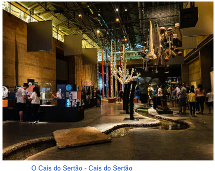

Centro de Artesanato de Pernambco
Quem ama artesanato, com certeza, já ouviu falar do Centro de Artesanato de Pernambuco, um espaço com uma variedade de peças artesanais que encantam a todos os visitantes. É possível notar os cuidados e detalhes até mesmo pelo lado de fora do espaço.
Além disso, esse é um local perfeito para quem deseja comprar matéria-prima. O centro conta com opções belíssimas do artesanato nordestino em cerâmica, madeira, vidro, tecido e muito mais.
Por isso é referência entre os artesãos, moradores da região e principalmente turistas.O Paço do Frevo é um espaço dedicado à preservação e promoção do frevo, um dos ritmos mais tradicionais de Pernambuco. Localizado no coração do Recife Antigo, o museu oferece exposições interativas, aulas de dança e oficinas. Essa tradição, engloba diversos tipos de artesanato.
E entre eles, podemos citar:
- A tecelagem
- Os trabalhos com madeira
- A cestaria
- Os trançados
- Rendas
- Bordados
- A tapeçaria
- O metal
- Couro
- Cerâmica


Onde ele fica?
Unidade Recife Endereço: Av. Alfredo Lisboa, s/n, Recife, PE, 50030-100. Frente à Praça do Marco Zero
Museu Cais do Sertão
Com recursos de tecnologia inovadores, automação e interatividade, além da leitura generosa de cineastas, escritores, artesãos, artistas plásticos, artistas visuais e músicos de todo o país, o Cais apresenta os fortes contrastes que marcam a vida nos sertões nordestinos, proporcionando aos visitantes uma experiência de imersão nesse universo.
O espaço é um empreendimento de economia criativa e está localizado no antigo Armazém 10 do Porto do Recife, vizinho ao Centro de Artesanato e ao Marco Zero do Recife.
Voltar para a página inícial Marco Zero.